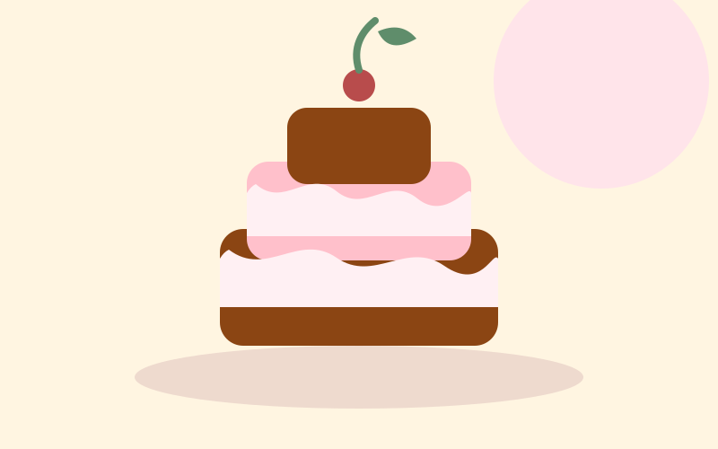

Tradición
La historia detrás de nuestros sabores
Cinco décadas de recetas, celebraciones y recuerdos que forman parte de la identidad de Pastelería Mil Sabores.
Leer artículohistorias, recetas y consejos
Descubre curiosidades, inspiración y consejos relacionados con la repostería, nuestra historia y esos pequeños detalles que hacen especial cada celebración.
últimas publicaciones
Dos artículos preparados para conocer mejor la tradición y disfrutar la repostería en casa.

Tradición
Cinco décadas de recetas, celebraciones y recuerdos que forman parte de la identidad de Pastelería Mil Sabores.
Leer artículo
Consejos
Recomendaciones simples para presentar, conservar y compartir tus postres favoritos en cualquier ocasión.
Leer artículomil sabores
Seguimos compartiendo tradición, creatividad y dulzura con nuestra comunidad.